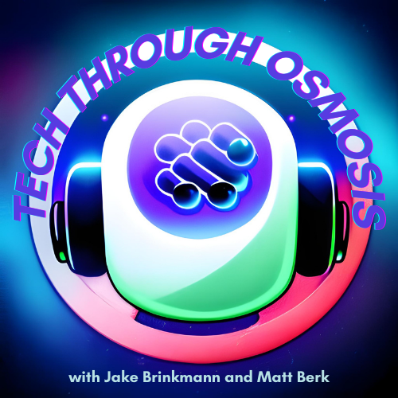

A project that began as a way for my friend Matt and I getting together weekly to
talk about the tech industry has evolved into a podcast we record twice a week.
I bring the prespective of a software developer just entering industry, and Matt brings
the prespective of a business student with a passion for tech. We discuss the latest news in
the space, speculate about the future, share our weekly intake of interesting tech
related content, and have a ton of fun doing it.
The idea to start recording came from the fact that we figured many students and young professionals
may feel like us, that the tech industry is massive and hard to digest. So we decided to record our
conversations in case they are helpful or just fun for others to listen to. If you are to start listening
to the podcast, I would also recommend keeping up with the tech industry, and coming to the podcast with some
of your own opinions already formed; this way we can hear the thoughts of any audience we manage to capture.
Both Matt and I are kind of treating this like our Tech Book Club, with it keeping us accountable to stay up to
date with the industry, and we would love to have you join us.
You can find our most recent episode listed below, and we hope you enjoy listening to them as much as we enjoy recording them!